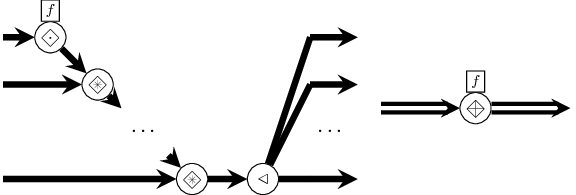
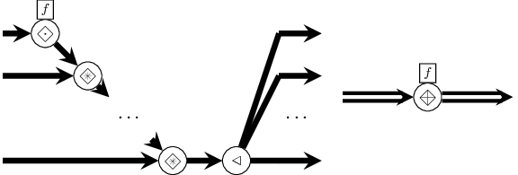
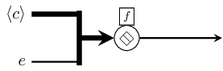

| Copyright | (c) George Ungureanu KTH/ICT/ESY 2015 |
|---|---|
| License | BSD-style (see the file LICENSE) |
| Maintainer | ugeorge@kth.se |
| Stability | experimental |
| Portability | portable |
| Safe Haskell | Safe |
| Language | Haskell2010 |
| Extensions | PostfixOperators |
ForSyDe.Atom.Skeleton
Contents
Description
This module exports a type class with the interfaces for the Skeleton layer atoms. It does NOT export any implementation of atoms not any constructor as composition of atoms.
IMPORTANT!!! see the naming convention rules on how to interpret, use and develop your own constructors.
Synopsis
- class Functor c => Skeleton c where
- farm22 :: Skeleton c => (a1 -> a2 -> (b1, b2)) -> c a1 -> c a2 -> (c b1, c b2)
- reduce :: Skeleton c => (a -> a -> a) -> c a -> a
- reducei :: Skeleton c => (a -> a -> a) -> a -> c a -> a
- pipe :: Skeleton c => c (a -> a) -> a -> a
- pipe2 :: Skeleton c => (a1 -> a2 -> a -> a) -> c a1 -> c a2 -> a -> a
Atoms
class Functor c => Skeleton c where Source #
Class containing all the Skeleton layer atoms.
This class is instantiated by a set of categorical types,
i.e. types which describe an inherent potential for being evaluated
in parallel. Skeletons are patterns from this layer. When skeletons
take as arguments entities from the MoC layer (i.e. processes), the
results themselves are parallel process networks which describe
systems with an inherent potential to be implemented on parallel
platforms. All skeletons can be described as composition of the
three atoms below (=<<= being just a specific instantiation of
=\=). This possible due to an existing theorem in the categorical
type theory, also called the Bird-Merteens formalism
[Bird97]:
- factorization
- A function on a categorical type is an algorithmic skeleton (i.e. catamorphism) iff it can be represented in a factorized form, i.e. as a map composed with a reduce.
Consequently, most of the skeletons for the implemented categorical types are described in their factorized form, taking as arguments either:
- type constructors or functions derived from type constructors
- processes, i.e. MoC layer entities
Most of the ground-work on algorithmic skeletons on which this module is founded has been laid in [Bird97], [Skillicorn05] and it founds many of the frameworks collected in [Gorlatch03].
Methods
(=.=) :: (a -> b) -> c a -> c b infixl 4 Source #
Atom which maps a function on each element of a structure (i.e. categorical type), defined as:

(=*=) :: c (a -> b) -> c a -> c b infixl 4 Source #
Atom which applies the functions contained by as structure (i.e. categorical type), on the elements of another structure, defined as:

(=\=) :: (a -> a -> a) -> c a -> a infixl 2 Source #
Atom which reduces a structure to an element based on an associative function, defined as:

Arguments
| :: c (a -> a) | vector of functions |
| -> a | kernel element |
| -> a | result |
Skeleton which pipes an element through all the functions contained by a structure.
N.B.: this is not an atom. It has an implicit definition which might be augmented by instances of this class to include edge cases.

As the composition operation is not associative, we cannot treat
pipe as a true reduction. Alas, it can still be exploited in
parallel since it exposes another type of parallelism: time
parallelism.
Returns the first element in a structure.
N.B.: this is not an atom. It has an implicit definition which might be replaced by instances of this class with a more efficient implementation.

Returns the last element in a structure.
N.B.: this is not an atom. It has an implicit definition which might be replaced by instances of this class with a more efficient implementation.

Skeleton constructors
Patterns of in the skeleton layer are provided, like all other
patterns in ForSyDe-Atom, as constructors. If the layer below
this one is the MoC layer, i.e. the functions
taken as arguments are processes, then these skeletons can be
regarded as process network constructors, as the structures
created are process networks with inherent potential for parallel
implementation.
farm22 :: Skeleton c => (a1 -> a2 -> (b1, b2)) -> c a1 -> c a2 -> (c b1, c b2) Source #
farm maps a function on a vector. It is the embodiment of the
map homomorphism, and its naming is inspired from the pattern
predominant in HPC. Indeed, if we consider the layer below as being
the MoC layer (i.e. the passed functions are
processes), the resulting structure could be regarded as a "farm of
data-parallel processes".
Constructors: farm[1-8][1-4].
 

Arguments
| :: Skeleton c | |
| => (a -> a -> a) | associative function (*) |
| -> c a | structure |
| -> a | reduced element |
Infix name for the =\= atom operator.
(*) if the operation is not associative then the network can be treated like a pipeline.
Arguments
| :: Skeleton c | |
| => (a -> a -> a) | associative function (*) |
| -> a | initial element of structure |
| -> c a | structure |
| -> a | reduced element |
reducei is special case of reduce where an initial element is
specified outside the reduced vector. It is implemented as a
pipe with switched arguments, and the reduction function is
constrained to be associative. It is semantically equivalent to the
pattern depicted below.
(*) if the operation is not associative then the network is
semantically equivalent to pipe1 (see pipe2).
